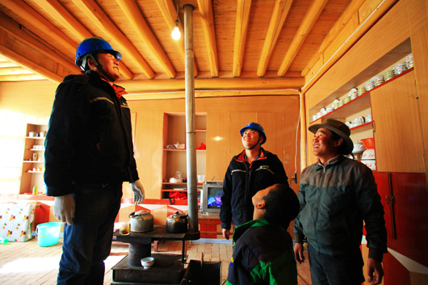
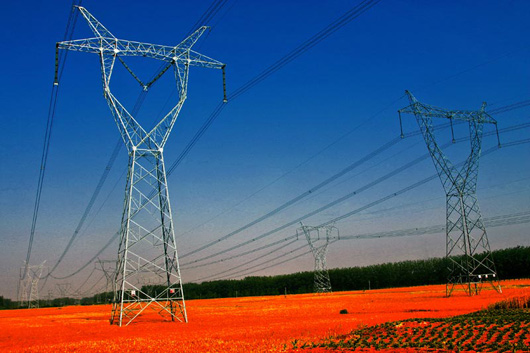

在践行党的初心使命中体现国家电网担当
发布时间：2019-09-03 大中小
党的十九大报告中，习近平总书记开宗明义，强调了共产党人的初心和使命，那就是“为中国人民谋幸福，为中华民族谋复兴”。
电力事业是党的事业的重要组成部分，与经济社会发展、人民生产生活息息相关。新中国成立以来，从建立民族电力工业体系，到着力解决突出的电力供需矛盾，再到为客户提供优质高效便捷的供电服务，一代又一代电力工作者始终艰辛努力、不懈付出，坚守着共产党人的初心和使命。
国家电网事业是党和人民的事业，我们的一切工作都是为党和人民服务。对国家电网有限公司而言，为人民谋幸福，就是要满足人民群众美好生活的用电需求；为民族谋复兴，就是要建设电力强国、保障能源安全、抢占能源革命先机。
公司党组深入学习习近平总书记在主题教育工作会议上的重要讲话，严格按照《中共中央关于在全党开展“不忘初心、牢记使命”主题教育的意见》，在中央第33指导组的有力指导下，牢牢把握根本任务和总要求，认真落实四项重点措施，推动主题教育深入开展。
坚守使命，初心如磐。公司以习近平新时代中国特色社会主义思想为指导，增强“四个意识”，坚定“四个自信”，做到“两个维护”，把“不忘初心、牢记使命”主题教育学习成效转化为坚决贯彻落实党中央决策部署的实际行动，转化为公司“三型两网”世界一流能源互联网企业建设落地实施的生动实践，在践行党的初心使命中体现国家电网担当。
理论学习有收获 思想政治受洗礼
“不忘初心、牢记使命”主题教育的根本任务是深入学习贯彻习近平新时代中国特色社会主义思想，锤炼忠诚干净担当的政治品格，团结带领全国各族人民为实现伟大梦想共同奋斗。
党的十八大以来，以习近平同志为核心的党中央基于新的发展实践，应时代之变迁、立时代之潮头、发时代之先声，创立了习近平新时代中国特色社会主义思想，开辟了马克思主义中国化的新境界，为全党全国人民在新的起点上推进中华民族伟大复兴提供了行动指南。
习近平总书记指出，理论学习有收获，重点是教育引导广大党员干部在原有学习的基础上取得新进步，加深对新时代中国特色社会主义思想和党中央大政方针的理解，学深悟透、融会贯通，增强贯彻落实的自觉性和坚定性，提高运用党的创新理论指导实践、推动工作的能力。这为推动党员干部全面系统学、深入思考学、联系实际学，指明了努力方向，提供了根本遵循。
中央“不忘初心、牢记使命”主题教育领导小组印发的《关于抓好第一批主题教育学习教育、调查研究、检视问题、整改落实工作的通知》明确指出，学习教育要把学懂弄通做实习近平新时代中国特色社会主义思想作为重中之重贯穿全过程，深学细悟、细照笃行，带着责任学、带着问题学，推动主题教育目标任务的实现。
公司始终把学习贯彻落实习近平新时代中国特色社会主义思想作为根本任务、摆在突出位置。公司党组书记、董事长寇伟在公司党组“不忘初心、牢记使命”主题教育读书班第一次集中学习研讨时表示，习近平新时代中国特色社会主义思想是当代中国的马克思主义，是公司科学发展的根本指针。习近平新时代中国特色社会主义思想内涵丰富、博大精深，是一个开放的、与时俱进的科学理论体系，必须不断深入学、及时跟进学，深刻领会其中所蕴含马克思主义立场观点方法，真正做到常学常新。要坚持学以致用，不断提高运用科学理论解决实际问题的本领，真正做到常用常新。
突出理论武装，在深学细照中坚守初心使命。集中学习、举办专题辅导报告会、交流读书体会、开展特色实践……公司总部及系统各单位党组织从实际出发，创造性开展主题教育，努力取得最好成效。
6月18日，公司邀请专家作题为“中国共产党人的初心和使命”的专题辅导报告，带领大家重温党的早期革命历史和艰苦奋斗历程。大家表示，要把对初心使命的坚定、执着融入到实践中去，为加快建设“三型两网”世界一流能源互联网企业不懈奋斗。
原原本本学习，铸忠诚之魂。6月24日，公司党组开展“不忘初心、牢记使命”主题教育读书班，以上率下带动全公司深入学习贯彻习近平新时代中国特色社会主义思想。在第一次集中学习研讨中，公司党组理论学习中心组成员分专题集中学习《习近平关于“不忘初心、牢记使命”重要论述选编》和《习近平新时代中国特色社会主义思想学习纲要》，并交流读书体会。大家纷纷表示，要秉持中国共产党人的初心和使命，坚定不移跟党走，立足岗位担当作为，以实际行动推动“三型两网”世界一流能源互联网企业建设，为服务经济社会发展，为中华民族伟大复兴贡献力量。
理论学习全面铺开，特色实践不断涌现。国网安徽电力党委领导班子成员带头抓好自身学习研讨，带动分管领域培育良好学风；国网辽宁电力党委认真学习习近平总书记在深入推进东北振兴座谈会上的重要讲话精神，用好省内红色资源，加强学习的穿透力和影响力。国网江苏电力党委升级红色实景党课，教育引导党员身临其境学党史、悟初心、强党性；国网浙江电力党委把“红船精神电力传承”作为重要内容，深入开展献礼新中国成立70周年活动……
通过学习研讨，公司干部员工进一步深化了对党的初心使命的感悟，深化了对习近平新时代中国特色社会主义思想的核心要义、精神实质、丰富内涵、实践要求的理解，“四个意识”更加牢固、“四个自信”更加坚定、“两个维护”更加坚决。
人民电业为人民 为民服务解难题

习近平总书记指出，为民服务解难题，重点是教育引导广大党员干部坚守人民立场，树立以人民为中心的发展理念，增进同人民群众的感情，自觉同人民想在一起，干在一起，着力解决群众的操心事、烦心事，以为民谋利、为民尽责的实际成效取信于民。
与人民心心相印、与人民同甘共苦、与人民团结奋斗，是我们党始终立于不败之地的根本保证。《中共中央关于在全党开展“不忘初心、牢记使命”主题教育的意见》指出，开展这次主题教育就是要教育引导全党同志牢记党的宗旨，坚持以人民为中心，把群众观点和群众路线深深根植于思想中，具体落实到行动上，不断巩固党执政的阶级基础和群众基础。
公司始终坚持“人民电业为人民”的企业宗旨，弘扬以客户为中心、专业专注、持续改善的企业核心价值观，牢固树立以人民为中心的发展思想，把服务人民美好生活需要作为工作的出发点和落脚点，把为客户创造价值作为工作的重要着力点，努力提高为民服务的质量和水平。公司不断抓重点、补短板，提供优质高效的新型供电服务，更好地服务人民美好生活需要；加快农网改造升级步伐，让最偏远的家庭不仅能用上电，还要用好电；扎实推进减轻客户电费负担工作，努力优化营商环境，助力地方经济社会发展……公司用可靠的电力保障和一流的供电服务，做好经济社会发展的电力“先行官”、架起党联系群众的“连心桥”。
“不忘初心、牢记使命”主题教育的总要求是守初心、担使命，找差距、抓落实。进入新时代，我国社会主要矛盾已经发生了深刻变化，对电力事业发展提出新的更高要求。对照党中央要求和人民期盼，公司在电网发展上还有不充分不平衡的问题，在管理上还有短板和不足，在服务上还没有充分满足人民对美好生活的需求，在促进中小微企业共同发展上还有差距。
寇伟表示，要进一步增强责任感和紧迫感，把这次主题教育的学习成效转化为解决难题、推动工作的思路、方法和举措，坚决落实党中央、国务院各项决策部署，着力解决好地方党委政府、广大客户、基层单位反映的突出问题，努力推动能源生产和消费革命，带动产业链上下游企业共同发展，以时不我待的精神状态和一往无前的奋斗姿态，充分发挥“大国重器”“顶梁柱”作用，让党中央放心、让人民群众满意。
有正视问题的自觉，才能发现不足、找到短板；有刀刃内向的勇气，才能解决问题、不断进步。
习近平总书记指出，各地区各部门各单位要结合实际，创造性开展工作，把学习教育、调查研究、检视问题、整改落实贯穿主题教育全过程。
公司领导班子成员将深入推进习近平总书记重要指示批示精神和党中央决策部署落实落地作为调查研究的重中之重，聚焦重点课题，密切结合公司工作实际，有针对性地开展调研，让习近平新时代中国特色社会主义思想入脑入心，在密切联系群众的过程中坚守初心和使命，用实际行动为党分忧、为国尽责、为民造福。
深入实际找症结，求真务实解难题。6月19-20日，寇伟带队到河北调研，聚焦落实党中央决策部署，倾听基层意见，直面客户诉求，从规划建设“雄安样板”、优化区域能源结构、促进河北经济转型升级等方面查问题、找对策，现场办公解决问题23项。6月12日至7月4日，公司党组副书记、总经理辛保安带队赴基层一线调研，掌握第一手资料，用心学习、用心领悟习近平新时代中国特色社会主义思想，用理论指导实践，努力寻找解决问题的办法和措施。
公司领导班子成员结合各自职责任务，着眼发现问题、解决问题，深入重大工程现场、重点项目工地、抗灾抢险一线、革命老区，主动找服务对象和基层员工了解情况，真心听取意见建议，努力把实情摸清楚、把症结分析透，研究提出解决问题、改进工作的思路和办法措施，让基层群众切实感受到主题教育带来的变化。
公司制定公司党组征求意见方案，围绕落实习近平总书记重要指示批示和党中央决策部署等六个方面，把对党组、对干部个人的意见收集起来。注重“面对面”与“背靠背”相结合，不怕揭短亮丑，通过谈心谈话、座谈访谈、意见留言等方式广开言路，让群众敢于提意见、直接提意见、当面提意见。坚持刀刃向内，发扬自我革命精神，自觉对表对标，深挖政治、思想、作风等方面的问题，触及实质、剖析根源，一条一条检视反思，一项一项列出清单，为整改落实打好基础。
为确保主题教育取得实实在在的成效，公司坚持把“改”贯穿始终，从解决调研检视发现的问题、巡视反馈的问题、群众反映强烈的问题入手，以猛药去疴的决心真改实改，切实做到问题不解决不松劲、解决不彻底不放手。
此外，公司组建10个巡回指导组，对各单位进行督促指导，及时传达党中央精神，督促解决突出问题，不断推动学习习近平新时代中国特色社会主义思想不断往深里走、往心里走、往实里走。
攻坚克难攀高峰 干事创业敢担当

干事创业敢担当，重点是教育引导广大党员干部以强烈的政治责任感和历史使命感，保持只争朝夕、奋发有为的战斗姿态和越是艰险越向前的斗争精神，以钉钉子精神抓工作落实，坚决摈弃一切明哲保身、得过且过、敷衍塞责、懒政怠政等消极行为，努力创造经得起实践、人民、历史检验的成绩。
习近平总书记指出，今天，我们比历史上任何时期都更接近、更有信心和能力实现中华民族伟大复兴的目标。现阶段我们既面临重大的机遇，也面临很多困难和挑战。
近期，中美经贸摩擦不断演化，世界多边贸易体系受到冲击，给我国经济发展带来了严峻考验。越是在吃劲的时候，越需要国有企业特别是中央企业挺身而出、勇挑重担，为党和国家战胜挑战、开拓前行贡献力量。
责任呼唤担当，使命引领未来。
公司是关系国计民生、联系千家万户的国有重要骨干企业，承担着保障安全、经济、清洁、可持续电力供应的重要使命。保障国家电网安全、支撑经济社会发展，是党中央赋予我们的重要使命。我们坚持使命引领，强化实践导向，牢固树立为党分忧、为国尽责的政治担当，切实发挥好“国家队”“顶梁柱”作用，全力推动党中央决策部署落地生根，全力确保大电网安全，全力服务经济社会发展。
回首公司的发展历程，公司不断自我加压，加快发展步伐。如今，一张以特高压为骨干网架，坚强智能的交直流互联大电网逐渐形成，在提供电力保障、优化配置资源、助力绿色发展等方面发挥出巨大作用；持续创新，特高压技术实现“中国引领”；不断扩大科技创新“朋友圈”，带动产业链上下共同发展；紧紧把握“一带一路”建设的重大机遇，加快“走出去”步伐，在更大范围、更广领域、更高层次上参与国际竞争与全球分工；结合行业特点，积极推进电力扶贫，坚持因地制宜、精准扶贫，助力地方政府打赢脱贫攻坚战；不断拓宽电能替代领域、替代方法和替代内容，让神州大地的天更蓝水更绿；持续推进新能源消纳，助力国家能源转型；推进“三型两网”世界一流能源互联网企业建设，保障能源电力可靠供应，以优质高效的服务满足经济社会发展和人民美好生活用能需要……
担使命，就必须用科学的理念、长远的眼光、务实的作风谋划事业。今年年初，公司创造性地提出了“三型两网、世界一流”的战略目标，为公司发展指明了方向。
寇伟在今年年中工作会议上指出，公司新时代发展战略的制定，本身就是我们学习贯彻习近平新时代中国特色社会主义思想的重要成果。建设“三型两网”的过程，就是推动习近平新时代中国特色社会主义思想在公司落地落实的过程；就是坚持以人民为中心，不断满足经济社会发展和人民群众美好生活用能需要的过程；就是践行新发展理念，服务美丽中国、数字中国、网络强国建设的过程。我们要把学习贯彻这一党的最新理论成果的成效，体现到建设“三型两网”的实践中，以优秀业绩彰显公司的使命和价值。
公司推进“三型两网”建设是一项极具开创性的系统复杂工程，面临的困难多、矛盾多。开展“不忘初心、牢记使命”主题教育，激励党员干部守初心、担使命，为推动公司高质量发展汇聚强大力量提供了难得机遇和治本良方。
寇伟要求，各级领导干部要进一步增强“四个意识”、坚定“四个自信”、做到“两个维护”，严守党的政治纪律和政治规矩，始终在政治立场、政治方向、政治原则、政治道路上同以习近平同志为核心的党中央保持高度一致；进一步弘扬拼搏精神、激发昂扬斗志，坚决摒弃一切明哲保身、得过且过、敷衍塞责等消极行为，敢于负责、敢于担当，不畏艰辛、开拓进取，努力创造一流业绩。
不忘初心，方得始终；行程万里，牢记使命。随着“不忘初心、牢记使命”主题教育的深入开展，公司广大党员干部进一步筑牢信仰之基、补足精神之钙、把稳思想之舵，凝聚起干事创业的磅礴力量，对照党中央要求和人民期盼，全力推动党中央决策部署落地生根，以优异成绩更好服务经济社会发展，以崭新面貌迎接新中国成立70周年。
信息来源：党组宣传部，国家电网杂志